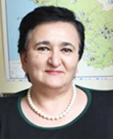

THE FESTIVAL HAS AN ACTUAL IDEA

Marina Mashvildishvili
VPL from Tshinvali, Head of 15 NGO coalition “Tskhinvalski Dom”, acting in sphere of Georgian - Ossetian relations
VPL from Tshinvali, Head of 15 NGO coalition “Tskhinvalski Dom”, acting in sphere of Georgian - Ossetian relations
What are your impressions about you got from the festivals in Noyemberyan and Vanadzor?
I got a high impression. If I got asked before the festival if this sort of a festival would bring any good or would it have any kind of an input into the peacekeeping process, I would have to stop and think about it highly doubting it. However after Noyemberyan and Vanadzor, I have no doubts what so ever about the positive role of this particular film festival toward making changes in relations of the two confronting sides towards each other.
What was the most memorable, what was unexpected and especially interesting for you in this trip?
One thing made a memorable impression on me, that was the young man who came up to us and told us that disregarding the financial difficulties that him and his family are expecting he can’t stand a side and asked to donate some money to the refugees, which today he has the ability to donate to the fond of the refugees from South Ossetia. By ignoring my protests he gave me all that he had in his pocked. But he didn’t say his name. The way he did it was so beautiful and heartfelt that one could say that from now on he is not going to pass by those who are in need.
How do you credit the festival, specially those discussions in which you took part?
The festival has an actual idea; it’s the first festival of its kin on Caucasus if I’m not mistaking. I looked at the faces in the audience with a wonder; I would listen and wonder on the level of interest they developed towards the speakers and how painfully they’re experiencing the conflicts that are happening not only in Armenia but other places as well. A lot of people aren’t ready to forgive those who stand along the other side of the barricades, and the majority are considering a dialog and coopera6tion with them. After viewing the films there was a different expression in their eyes, something definitely changed.
How do you imagine the future of the festival «I am -Human»? What kind of suggestions do you have for the organizers?
Naturally the film festival has a huge future, but only in the aspect of long term activities. The festival alone is similar to a meteor that sparked and left a tail of impressions in people’s consciences, and in order to liquidate the image of “the enemy” in peoples thoughts and to brig the conflicting sides closer together, purposeful and complex activities are required, that will be accompanied by the festival, photo shows and other forms of art.
Luiza Poghosyan
September 2008
Published: 24-11-08
This interview is made during the South Caucasus Film Festival of Peace and Human Rights in Armenia implemented by Caucasus Center of Peace-Making Initiative by support of the Eurasia
Partnership Foundation
and the American People through
the United States Agency
for International Development (USAID)
I got a high impression. If I got asked before the festival if this sort of a festival would bring any good or would it have any kind of an input into the peacekeeping process, I would have to stop and think about it highly doubting it. However after Noyemberyan and Vanadzor, I have no doubts what so ever about the positive role of this particular film festival toward making changes in relations of the two confronting sides towards each other.
What was the most memorable, what was unexpected and especially interesting for you in this trip?
One thing made a memorable impression on me, that was the young man who came up to us and told us that disregarding the financial difficulties that him and his family are expecting he can’t stand a side and asked to donate some money to the refugees, which today he has the ability to donate to the fond of the refugees from South Ossetia. By ignoring my protests he gave me all that he had in his pocked. But he didn’t say his name. The way he did it was so beautiful and heartfelt that one could say that from now on he is not going to pass by those who are in need.
How do you credit the festival, specially those discussions in which you took part?
The festival has an actual idea; it’s the first festival of its kin on Caucasus if I’m not mistaking. I looked at the faces in the audience with a wonder; I would listen and wonder on the level of interest they developed towards the speakers and how painfully they’re experiencing the conflicts that are happening not only in Armenia but other places as well. A lot of people aren’t ready to forgive those who stand along the other side of the barricades, and the majority are considering a dialog and coopera6tion with them. After viewing the films there was a different expression in their eyes, something definitely changed.
How do you imagine the future of the festival «I am -Human»? What kind of suggestions do you have for the organizers?
Naturally the film festival has a huge future, but only in the aspect of long term activities. The festival alone is similar to a meteor that sparked and left a tail of impressions in people’s consciences, and in order to liquidate the image of “the enemy” in peoples thoughts and to brig the conflicting sides closer together, purposeful and complex activities are required, that will be accompanied by the festival, photo shows and other forms of art.
Luiza Poghosyan
September 2008
Published: 24-11-08